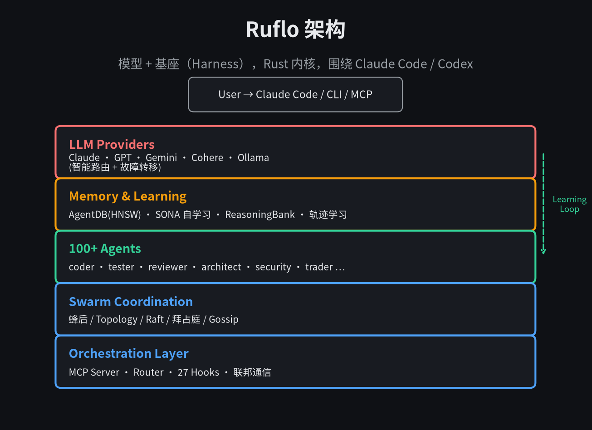
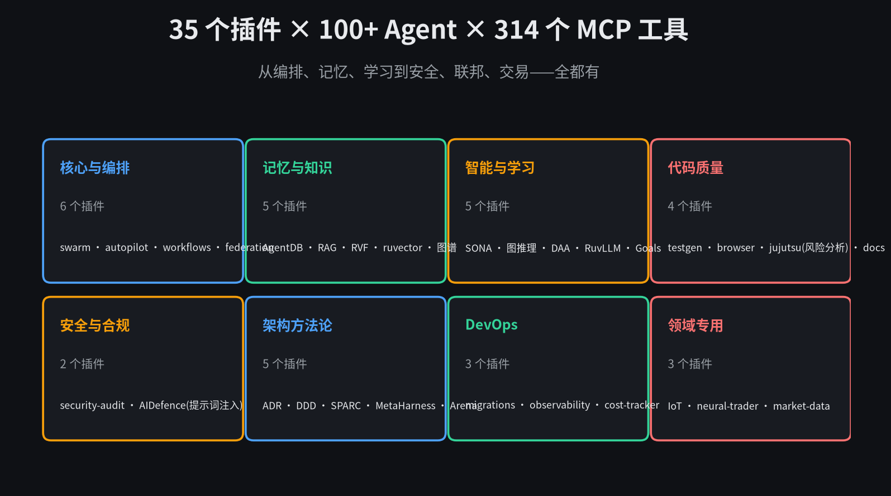
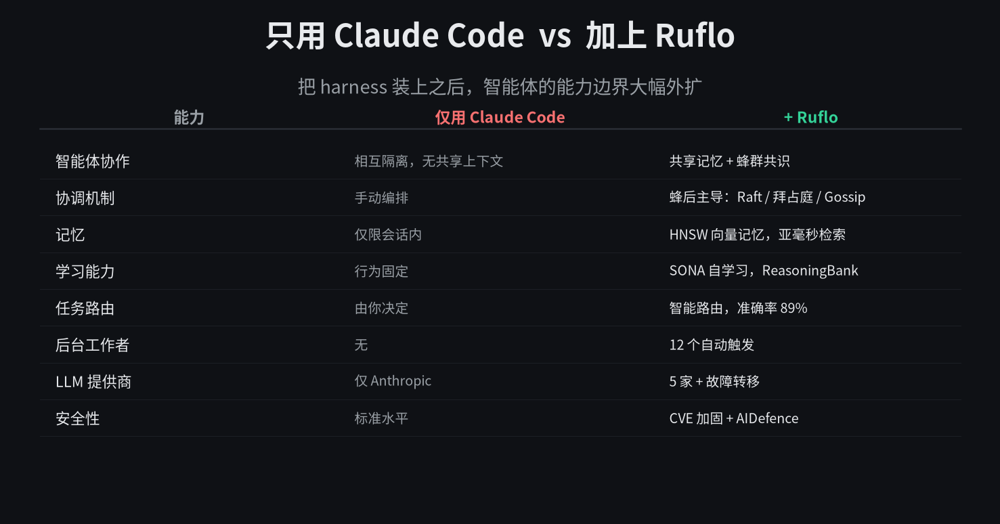
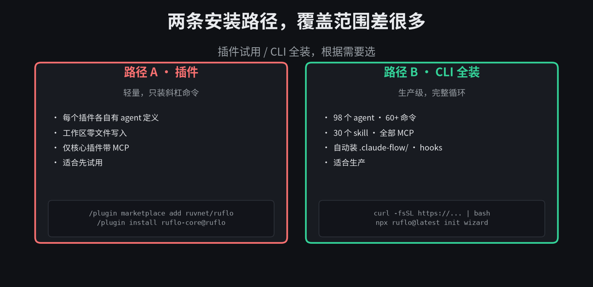

模型 + 基座。Ruflo 就是那个基座。
rUv 上个月把 Claude Flow 重命名成了 Ruflo，然后一口气推到了 v3.8。我翻了它的中文 README，又对比了 benchmarks。这东西比我一开始预期的野心大得多。
它的定位写在第一行。智能体 = 模型 + 基座（Harness）。模型负责写作，基座给它工具、记忆、循环、沙箱和控制能力。Ruflo 就是那个基座，围绕 Claude Code 和 Codex 转。
先讲概念，再讲怎么装。
01
它到底是什么
架构自上而下分五层。最上面是用户入口，Claude Code 或 CLI 或 MCP。下面是编排层，MCP Server、Router、27 个 Hooks。再下面是 Swarm 协调，蜂后主导的拓扑。然后是 100+ 专用智能体。最底下是记忆、学习和 LLM 提供商。
架构里有一条虚线从 Memory 层绕回 Swarm 层，标着 Learning Loop。这是 Ruflo 的核心设计之一。Agent 每次成功的行为都被 SONA 神经模式学习并固化进 ReasoningBank。下次类似任务路由到这个 agent 时，它已经读过之前怎么成功过。
记忆层用的是 AgentDB，一个 HNSW 向量数据库。README 里给了实测数据。N=20k 时比暴力检索快约 1.9 倍，N=5k 时快 3.2–4.7 倍，recall@10 约 0.99。
02
100+ Agent + 35 插件 + 314 MCP 工具
Ruflo 目前有 100+ 专用 agent，覆盖编码、测试、安全、文档、架构。插件分成 8 类。

35 个插件，从编排到领域专用。
核心与编排这一类最值得关注。ruflo-swarm 让多个 agent 作为团队协作，共识机制支持 Raft、拜占庭容错、Gossip。ruflo-federation 让跨机器、跨组织的 agent 能零信任地通信。
联邦这块的设计挺有意思。你的 agent 加入联邦，mTLS + ed25519 完成身份验证。出站消息自动走 14 类 PII 扫描流水线，根据信任级别决定 BLOCK、REDACT、HASH 或 PASS。对等方的信任评分实时计算，公式是 0.4×success + 0.2×uptime + 0.2×threat + 0.2×integrity。降级即时生效。
还有一个 ruflo-sparc，带质量门的 5 阶段引导式开发方法论。以及 ruflo-arena，竞争性 ruliology，让 agent 策略在锦标赛里对决，胜者爬山优化。听起来很硬核。
03
对比一下
它官方给了一张对比表，左边是纯 Claude Code，右边是加上 Ruflo。摘几项出来：

把 harness 装上之后，智能体的能力边界大幅外扩。
基准测试方面，README 说 v3.8.0 在 darwin-arm64 和 linux-x64 上对 LangGraph、AutoGen、CrewAI 有 SOTA 表现，冷启动、单轮、RSS 上快 1.3× 到 1953×。Rust 内核的优势在这体现得很明显。
04
怎么装
有两条完全不同的安装路径。
# 路径 A · 插件（轻量） # 只装斜杠命令和少量 agent 定义，工作区零写入 /plugin marketplace add ruvnet/ruflo /plugin install ruflo-core@ruflo /plugin install ruflo-swarm@ruflo # 路径 B · CLI 全装（生产级） # 98 个 agent，60+ 命令，30 个 skill，全部 MCP curl -fsSL https://cdn.jsdelivr.net/gh/ruvnet/ruflo@main/scripts/install.sh | bash # 或用 npx（所有平台，包括原生 Windows） npx ruflo@latest init wizard npm install -g ruflo@latest

两条路径覆盖范围差很多。
如果要把 Ruflo 当作独立 MCP server 加到 Claude Code，一条命令：
claude mcp add claude-flow -- npx ruflo@latest mcp start
Windows 用户注意。curl 那条需要 POSIX shell（WSL、Git-Bash、MSYS）。PowerShell 和 cmd 里直接用 npx 那一行就行，两条路径最终都是同一个 init 流程。
05
第一次用是什么感觉
README 有个细节我特别喜欢。第一次用 Ruflo，你不需要先学会 314 个 MCP 工具或 26 条 CLI 命令。执行完 init 之后，像平常一样用 Claude Code 就行。钩子系统会自动路由任务、从成功模式中学习、在后台协调智能体。
它还自带一个 MetaHarness，给你的 AI agent 配置打分（1–100）、扫描工具配置里的安全风险、做项目快照捕捉长期回归、找到匹配的模板。跑完以后可以用 ruflo eject 把 ruflo 项目抽成独立 agent 工具包。
另外 ruflo verify 能密码学证明已安装的字节和签名见证一致。这一条对企业环境很重要。
06
我的判断
Ruflo 在做的事情，本质上是把 Agent 工程化的所有东西打包成一个完整的 harness。Swarm、记忆、自学习、联邦通信、安全护栏、可观测性，全是现成的组件，不用你自己拼。
它的野心比 LangGraph、AutoGen、CrewAI 大得多。后者主要是编排框架，Ruflo 是把整个运行态都覆盖了。不过这种全栈也意味着上手曲线更高。CLI 装完会往工作区写 .claude/、.claude-flow/、CLAUDE.md 等辅助文件，这一点要清楚。
如果你只是想试一个功能，走插件路径就好，不要上来就 CLI 全装。
智能体 = 模型 + 基座。模型负责写作，基座让它能协作、能记住、能自己跑。
MIT 协议，Rust 内核。仓库在 github.com/ruvnet/ruflo。